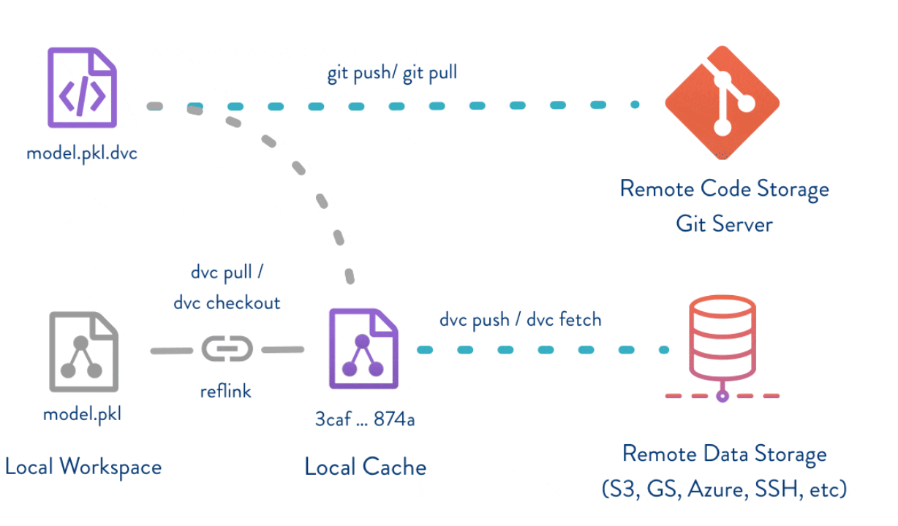

MLOps
Design Considerations
Key Concepts
Reproducibility
Guaranteed training experiments are reproducible:
Versioned data, code, and models
Automatically tracked experiments
Ability to compare experiments
Infrastructure
Ability to quickly switch between local and cloud environment (e.g. VM vs Kubernetes)
Cached pipeline states for faster experiment iterations.
Scaling:
Ability to parallelize tasks/jobs when working with large datasets
Model serving
Pre-built helpers to compare and visualize parameters and results.
Automated evaluation of each pipeline run with tools like Tensorboard.
Automated statistics visualization of each pipeline run.
Data Centric View
The most important task for MLOps is to consistently ensure high-quality data in all phases of the ML project lifecycle. Good data is considered as:
Defined consistently (definition of labels are unambiguous)
Quality coverage of important cases (inputs X)
Has timely feedback from production data (distribution covers data drift and concept drift)
Sized appropriately
Data Version Control (DVC)
Versioning Machine Learning workflows is critical in order to ensure the
data, models, and code can be shareable and reproducible. There are several
open source frameworks to assist with versioning such as DVC.
Key Concepts
Open source toolbox for data science and machine learning projects.
Tool to manage and version datasets, machine learning models, and ML pipelines.
Removes the need to create versioning databases or use special file/folder structure.
Checkout different data versions for the purposes of testing and running sanity checks.
Run benchmarks against previously deployed models before a new one is validated and released into production.
How it Works
DVC keeps metafiles in
Gitto describe and version control your data sets and models that are stored in a remote data store such as:AWS S3 Bucket, Azure Blob Storage, Google Drive, HDFS, etc.
Git still handles all of the version control for our code and metafiles, but DVC helps extends Git version control large files that we want to keep outside of the Git repository.
DVC is not entirely for just “data”, but works for any file type.
Reference 
DVC Pipelines
Pipelines and corresponding data can easily be versioned (using Git), allowing for quick iterations and testing along with reproducing your workflow and results.
Stages in the ML pipeline are defined in a
dvc.yamlfile.The stages form a pipeline form a dependency graph (DAG) when connected to each other.
Each pipeline run tracks the metadata, parameters and can be compared to other runs.
The data for each pipeline is automatically versioned and tracked as it flows through.
Advantages
Automation: allows you to run a sequence of steps in the ML pipeline which makes iterating on your project faster.
DVC will automatically determines which parts of a pipeline need to be run, as it caches the results to avoid unnecessary re-runs.
Reproducibility:
dvc.yamlanddvc.lockfiles describe what data to use and which commands will generate the pipeline results; Git makes it easy to version these files.
Continuous Machine Learning (CML)
Continuous Machine Learning
CMLis an open-source CLI tool for implementing continuous integration & delivery (CI/CD) with a focus on MLOps.CMLassists with orchestration, testing and monitoring ML applications.Integrates with GitHub Actions.
CML assists with automating development workflows:
Machine provisioning: for training (e.g. Docker Container) using AWS/Azure/GCP or on-prem
Comparing ML experiments
Monitoring changing datasets with DVC.
DVC can also help visualize how metrics differ between commits in the report.
CMLSupports generating Markdown reports (e.g. plots/metrics) embedded in a pull-request.
Example
name: train-my-model
on: [push]
jobs:
deploy-runner:
runs-on: [ubuntu-latest]
steps:
- uses: actions/checkout@v2
- uses: iterative/setup-cml@v1
- name: deploy
shell: bash
env:
repo_token: ${{ secrets.PERSONAL_ACCESS_TOKEN }}
AWS_ACCESS_KEY_ID: ${{ secrets.AWS_ACCESS_KEY_ID }}
AWS_SECRET_ACCESS_KEY: ${{ secrets.AWS_SECRET_ACCESS_KEY }}
run: |
cml-runner \
--cloud aws \
--cloud-region us-west \
--cloud-type=t2.micro \
--labels=cml-runner
run:
needs: deploy-runner
runs-on: [self-hosted,cml-runner]
container: docker://dvcorg/cml
steps:
- uses: actions/checkout@v2
- uses: actions/setup-python@v2
with:
python-version: '3.6'
- name: cml
env:
repo_token: ${{ secrets.PERSONAL_ACCESS_TOKEN }}
run: |
python --version
pip install -r requirements.txt
python train.py
echo "## Report from your EC2 Instance" > report.md
cat metrics.txt >> report.md
cml-publish "confusion_matrix.png" --md >> report.md
cml-send-comment report.md
Production Monitoring
Types of Drift
Concept Drift when the change in P(Y|X) is a shifted in the actual relationship between the model inputs and the output.
Prediction Drift when the change in P(Y_pred|X) is shifted in the model’s predictions.
Label Drift when the change in P(Y Ground Truth) is shifted in the model’s output or label distribution.
Feature Drift when a change in P(X) is a shifted in the model’s input data distribution.
Detecting Drift
Data drifts involve a statistical change in the underlying data. Below are several approaches than can be implemented to automatically detect drift.
Detect Drift for Structured Images
Data Type Check: inferred vs observed data types
Completeness Check: completeness of non-null values (%) vs threshold
Baseline Drift Check: deviation from baseline (%) vs threshold
Missing Column Check: observed columns vs baseline columns
Extra Column Check: observed columns vs baseline columns
Categorical Values Check: observed unknown values vs baseline known values
Data Quality Checks: Recurring, Incremental, Outlier, Abrupt Changes, etc.
Adaptive Sliding Window: Works by keeping track of several statistical properties of data within a window that automatically grows and shrinks.
Kolmogorov-Smirnov Test a nonparametric test, meaning doesn’t assume any particular underlying distribution. This test compares your data with a known distribution and test if they come from the same distribution.
Null Hypothesis: Samples are from the same distribution
Detect Drift for Images
One approach to detect data drift for image data is to train an
Autoencoderon the training dataset and to use this representation to reconstruct data that is being presented to the model at inference time.If intuition is that the reconstruction error is high then the data being presented to the model is different from what it was trained on.
Steps:
Learn a low dimensional representation of the training dataset:
encoder.Reconstruct a validation dataset using the representation from Step 1 :
decoderStore the error loss as baseline for the reconstruction loss.
Determine if the image presented at inference time exceeds the baseline.
Detecting Model Drift
Kullback–Leibler: measures how one probability distribution is different from a second, reference probability distribution (e.g. training vs production).